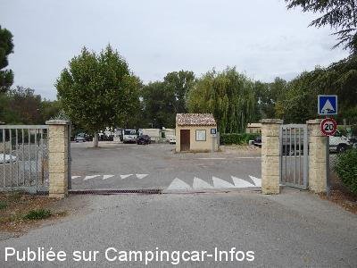
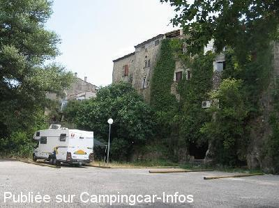
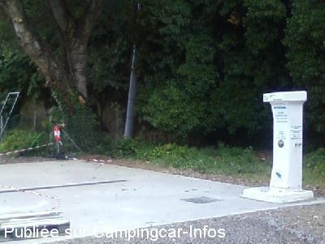
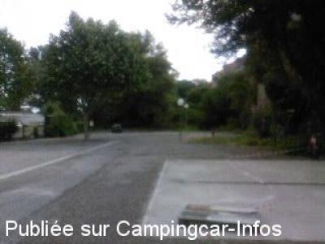

ASN = Aire de services avec stationnement nuit possible de :
SAINT PAUL LEZ DURANCE
(N° 749)
Accès/adresse :
Rue du Camping le Retour
13114 SAINT PAUL LEZ DURANCE
13114 SAINT PAUL LEZ DURANCE
Latitude : (Nord) 43.68795° Décimaux ou 43° 41′ 16′′
Longitude : (Est) 5.7027° Décimaux ou 5° 42′ 9′′
Tarif : Gratuit
Type de borne : FLOT BLEU
Services :


Les commerces sont à 10 mn à pied
Autres informations :
Stationnement limité 48 heures
Dans le parc résidentiel de loisirs, camping
Accès libre aux services pour C-C.
Eau non disponible en période de gel
http://www.stpaul.fr/accueil-camping-car.html

Le 01/10/2013 par pathfinder13

Le 26/07/2009 par hubij

Le 01/06/2009 par pascal et elise

Le 01/06/2009 par pascal et elise
de
Nenettemamita
le 02/05/2015 :
Nous y sommes passés en Août 2014, avant notre séjour à Gréoux, nous sommes restés une nuit sur cette aire, petit camping familial sympa un peu à l'ancienne beaucoup de mobil-homes ou caravanes datant, mais la tranquillité et la gratuité c'est rare.
Nous y sommes passés en Août 2014, avant notre séjour à Gréoux, nous sommes restés une nuit sur cette aire, petit camping familial sympa un peu à l'ancienne beaucoup de mobil-homes ou caravanes datant, mais la tranquillité et la gratuité c'est rare.
de
steph & mumu
le 12/10/2014 :
Nous sommes passés sur cet aire au mois d'aout, à éviter. Tous les camping car faisaient demi-tour ! dommage car c'est gratuit. Faites le plein d'eau et partez.
Nous sommes passés sur cet aire au mois d'aout, à éviter. Tous les camping car faisaient demi-tour ! dommage car c'est gratuit. Faites le plein d'eau et partez.
de
DENEUX
le 18/10/2013 :
nous avons passé une nuit au calme
possibilité d'utiliser les douches et wc du bloc sanitaire
services gratuits et commerce a proximité
idéal pour une nuit
nous avons passé une nuit au calme
possibilité d'utiliser les douches et wc du bloc sanitaire
services gratuits et commerce a proximité
idéal pour une nuit
de
pathfinder13
le 01/10/2013 :
Séjour d'une nuit (sept 2013).
Parking gratuit. Vidange eaux usées et cassette WC gratuit. Calme mais un peu trop encaissé entre falaise et grands arbres. Emplacements petits (pas de store ni de table) mais suffisant même pour les gros gabarits. Bref, une nuit suffit. Ce lieu a le mérite d'exister. C'est un bon aire de secours. Merci à la comune.
Séjour d'une nuit (sept 2013).
Parking gratuit. Vidange eaux usées et cassette WC gratuit. Calme mais un peu trop encaissé entre falaise et grands arbres. Emplacements petits (pas de store ni de table) mais suffisant même pour les gros gabarits. Bref, une nuit suffit. Ce lieu a le mérite d'exister. C'est un bon aire de secours. Merci à la comune.
de
Fred Martin
le 26/08/2013 :
Le camping n'est pas très engageant...
Mais tout au fond, quelques emplacements CC au calme.
Et surtout, une borne en état de marche et gratuite!
Merci pour ces services!
Le camping n'est pas très engageant...
Mais tout au fond, quelques emplacements CC au calme.
Et surtout, une borne en état de marche et gratuite!
Merci pour ces services!
de
buchere
le 03/10/2011 :
il y a 6 places 2 ou on peu regarder la tele les autres non parc de loisir ?
il y a 6 places 2 ou on peu regarder la tele les autres non parc de loisir ?
de
jeanic
le 22/09/2010 :
Nous sommes passés et ne sommes pas restés. Nous avons été déçus par l'espace et l'environnement camping.
Nous sommes passés et ne sommes pas restés. Nous avons été déçus par l'espace et l'environnement camping.
de
K. H. Huber
le 02/04/2010 :
Die Übernachtungsplätze sind ordentlich eingerichtet und mit Holzstangen parzelliert. 7 Plätze, Sanistation vorhanden. Die Stellplätze liegen unterhalb einer hohen Mauer und waren am 13.03.2010 um 12:30 Uhr noch immer im Schatten (im Sommer wohl angenehm, in der kalten Jahreszeit jedoch nachteilig). Leider ist der Platz Teil eines vermutlich früheren Campingplatzes, mit vielen alten und vergammelten Wohnwagen und Hütten und ebenso vielen abgestellten alten Autos. Wir fuhren daher am 13.03.2010 nach Besichtigung weiter.
Die Übernachtungsplätze sind ordentlich eingerichtet und mit Holzstangen parzelliert. 7 Plätze, Sanistation vorhanden. Die Stellplätze liegen unterhalb einer hohen Mauer und waren am 13.03.2010 um 12:30 Uhr noch immer im Schatten (im Sommer wohl angenehm, in der kalten Jahreszeit jedoch nachteilig). Leider ist der Platz Teil eines vermutlich früheren Campingplatzes, mit vielen alten und vergammelten Wohnwagen und Hütten und ebenso vielen abgestellten alten Autos. Wir fuhren daher am 13.03.2010 nach Besichtigung weiter.
de
P G
le 25/02/2010 :
Situated off the D952. Free parking for 48 hours space for 6 vans, Flot Bleu for water, dump for black & grey waste. Designated for motorhome parking and suitable for large vans. Local shops including bakers, butcher and cafe 5 mins walk.
Situated off the D952. Free parking for 48 hours space for 6 vans, Flot Bleu for water, dump for black & grey waste. Designated for motorhome parking and suitable for large vans. Local shops including bakers, butcher and cafe 5 mins walk.
de
gégé 62
le 09/10/2009 :
Rien à redire, bel emplacement, en plus gratuit. Nuit très calme, avec comme bruit de fond, la cascade.
Rien à redire, bel emplacement, en plus gratuit. Nuit très calme, avec comme bruit de fond, la cascade.